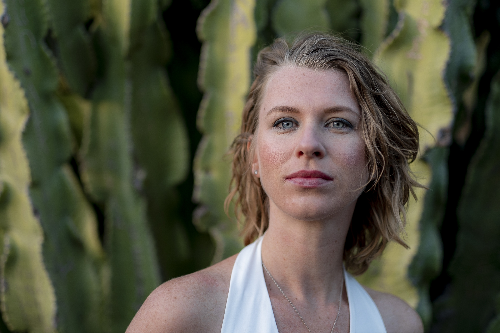
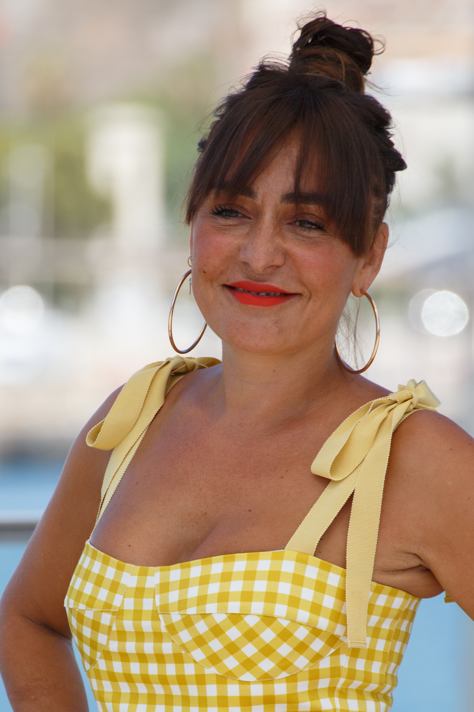
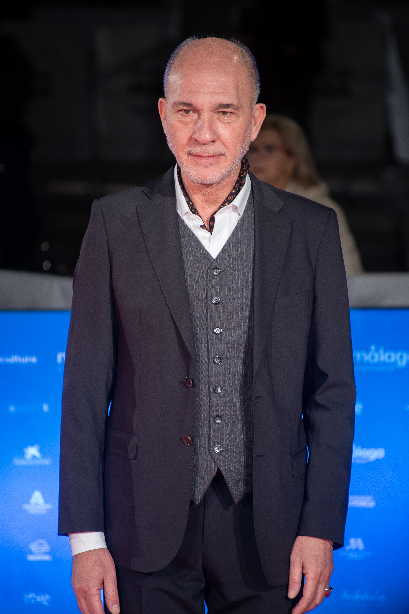
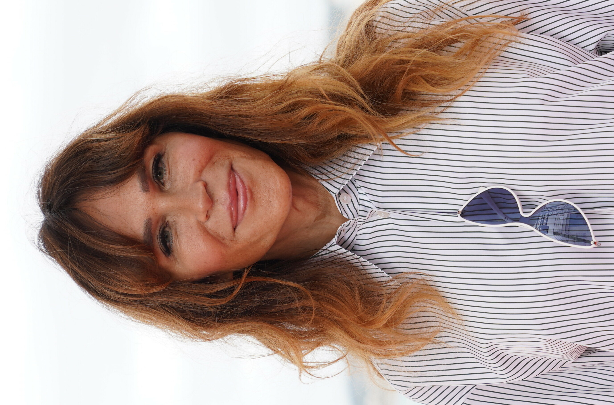
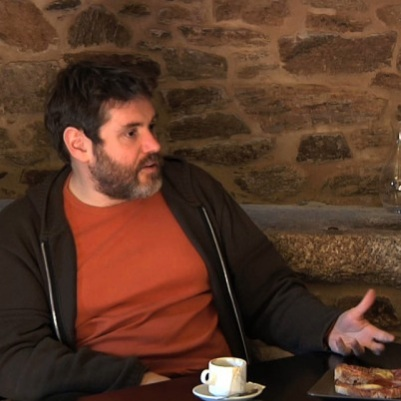
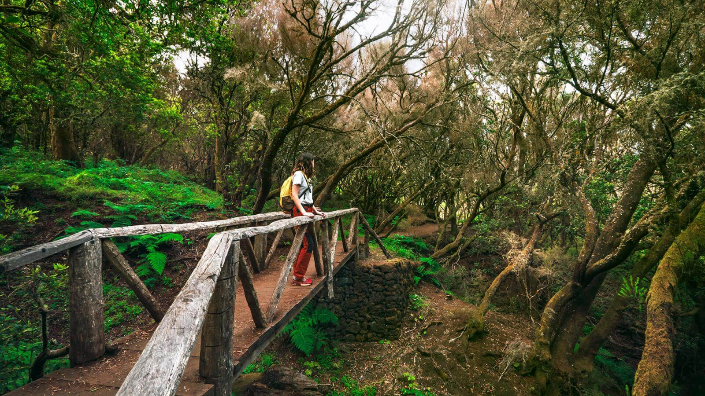

Directorio Escénico y Audiovisual
Talento herreño y canario, creadores vinculados a la isla y empresas que hacen posible rodar en El Hierro.
Perfiles, productoras y festivales listos para activar un rodaje con criterio local.
Esta selección combina nombres reconocibles, talento vinculado a El Hierro y agentes que ya entienden la escala, la logística y el lenguaje audiovisual del territorio.
Actrices, actores y dirección con recorrido nacional e internacional.
Empresas con capacidad operativa para rodajes, servicios y coordinación en Canarias.
Festivales y plataformas culturales que conectan la isla con la industria.

Aïda Ballmann
Actriz · Directora · Festival InsulariaNacida en El Hierro en 1985, es la figura audiovisual más relevante de la isla. Estudió Arte Dramático en Gijón y Sevilla. Ha protagonizado El tiempo entre costuras, Crossfire y Lo que escondían sus ojos. Mejor Actriz en el Cardiff International Film Festival (2013). Desde 2016, directora artística del Festival Internacional Insularia, primer festival hispanohablante de cine insular del mundo.

Candela Peña
Actriz protagonista · Serie HierroTres premios Goya (Mejor Actriz por Princesas, 2005; Reparto por Te doy mis ojos y Un arma en cada mano). Premio Ondas 2019 a Mejor Actriz por su papel de la jueza Candela Montes en la serie Hierro (Movistar+), rodada íntegramente en la isla durante dos temporadas.

Darío Grandinetti
Actor · Serie Hierro · AlmodóvarActor argentino protagonista de Hierro como el sospechoso Antonio Díaz. Ha trabajado con Pedro Almodóvar (Hable con ella), Damián Szifron (Relatos salvajes) y obtenido el primer Emmy Internacional para un actor argentino (2012).

Antonia San Juan
Actriz · Canaria · Serie HierroNacida en Las Palmas de Gran Canaria. Icono del cine de Almodóvar por La Agrado en Todo sobre mi madre (1999, Palme d'Or Cannes). Conocida también por La que se avecina. Participó en la serie Hierro, aportando presencia canaria al reparto.

Kimberley Tell
Actriz · Serie Hierro T1 y T2 · RTVEActriz y cantante nacida en Lanzarote (1989). Participó en ambas temporadas de Hierro como Pilar Díaz. Protagonizó ENA (RTVE, 2024) como la reina Victoria Eugenia y ha aparecido en Buscando el norte y Algo que celebrar. También artista musical con su EP 135.
Matias Varela
Actor · Hierro T2 · Narcos · Easy MoneyActor sueco de origen gallego (Estocolmo, 1980). Conocido por la trilogía sueca Easy Money y por Narcos (Netflix) como jefe de seguridad del Cártel de Cali. Rodó en El Hierro la T2 de Hierro como Gaspar Cabrera, hijo de herreños criado en Miami.

Jorge Coira
Director · Hierro · Rapa · GoyaDirector y montador gallego (Rábade, 1971). Premio Goya al Mejor Montaje 2016 por El desconocido. Dirigió las dos temporadas de Hierro (Movistar+, 2019–2022) rodadas íntegramente en la isla, y después Rapa. Uno de los cineastas que mejor conoce el territorio de El Hierro.

Aina Clotet
Actriz · Hierro T2 · Festival de MálagaActriz y directora barcelonesa (1982). Premio Biznaga de Plata a Mejor Actriz en Málaga 2019. Interpretó a Tamara Arias, la abogada rival de la jueza, en la segunda temporada de Hierro rodada en la isla.
Portocabo
Productora · Creadora de Hierro y RapaProductora gallega fundada por Alfonso Blanco ("Fosco") en 2010. Creó Hierro (Movistar+/ARTE France, 2019–2022) y Rapa (Movistar+). Premio al Mejor Proyecto en la Berlinale 2015. Ha abierto sede en Las Palmas de Gran Canaria y es la productora con más propiedad intelectual de sus series en España.
Festival Insularia
Festival Internacional de Cine Insular · El HierroPrimer festival hispanohablante dedicado exclusivamente al cine producido en islas de todo el mundo. Sede principal en El Hierro. IX edición en octubre 2025. Incluye la sección competitiva KM.0 – Hecho en El Hierro para talentos herreños. Ha programado cine de Islandia, Cuba, Sri Lanka, Azores, Nueva Zelanda y más de 30 territorios insulares.

Las Hormigas Negras
Productora · Servicios de Producción CanariasProductora canaria especializada en publicidad, TV, branded content y servicios integrales de producción para filmaciones internacionales en todo el archipiélago, incluido El Hierro. Estudio audiovisual propio de 350 m² en Gran Canaria. Alquiler de cámara, iluminación y grip. Fundada en 2013 por Mario Blanco y Luis Luque.

Bimbache openART Festival
Festival de Arte Contemporáneo · El Hierro · desde 2005Festival multidisciplinar con sede en Frontera, El Hierro, activo desde 2005 (XX edición en 2025). Reconocido por la UNESCO en 2007. Integra música, danza, fotografía y producción de vídeos musicales rodados en localizaciones emblemáticas de la isla. Incluye casArte, residencia de artistas internacionales en El Hierro.